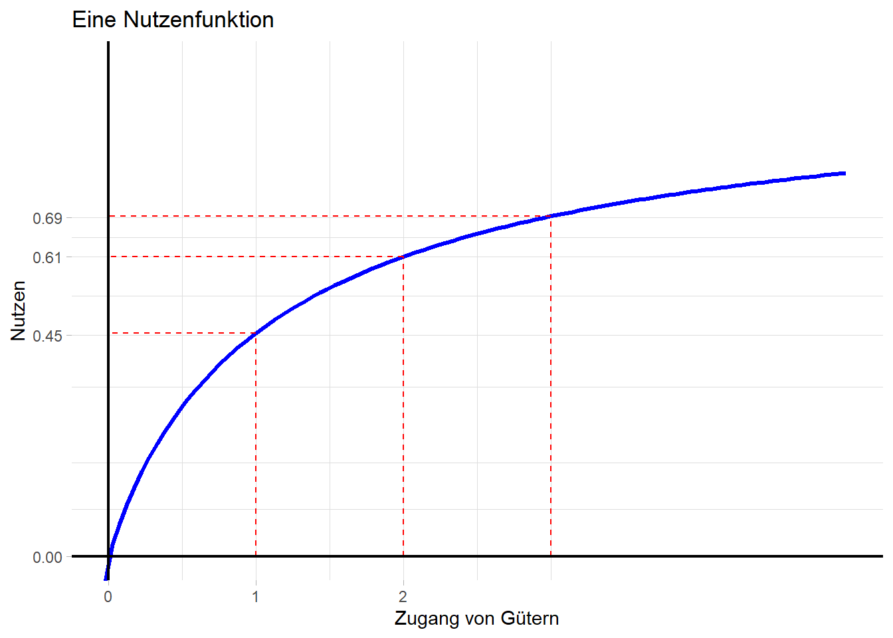
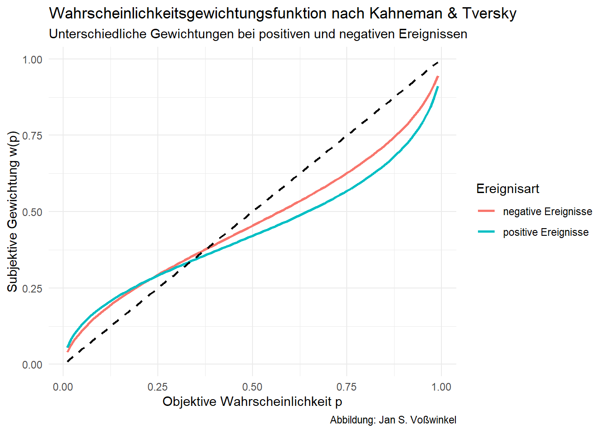

library(ggplot2)# Sigmoid-Funktionsigmoid_sym <-function(x, k, lambda) {ifelse(x>=0, x / (1+abs(x)^k)^(1/k), (lambda)*x / (1+abs(x)^k)^(1/k))}# Daten erzeugendf <-data.frame(x =seq(-5, 5, length.out =200))df$y <-sigmoid_sym(df$x, k = .88, lambda=2.25)# Hilfslinien und Achsen-Breaksx_vals <-c(-3, -2, -1, 1, 2, 3)y_vals <-sigmoid_sym(x_vals, k = .88, lambda=2.25)lines_df <-data.frame(x = x_vals, y = y_vals)p <-ggplot(df, aes(x, y)) +geom_line(size =1.2, color ="blue") +# Vertikale Hilfsliniengeom_segment(data = lines_df,aes(x = x, xend = x, y =0, yend = y),linetype ="dashed", color ="red" ) +# Horizontale Hilfsliniengeom_segment(data = lines_df,aes(x = x, xend =0, y = y, yend = y),linetype ="dashed", color ="red" ) +# Achsen durch den Ursprunggeom_hline(yintercept =0, color ="black", linewidth =0.8) +geom_vline(xintercept =0, color ="black", linewidth =0.8) +# Achsen-Breaksscale_x_continuous(breaks =c(-2, -1, 0, 1, 2)) +scale_y_continuous(breaks =c(round(y_vals, 2), 0)) +labs(title ="Eine Nutzenfunktion nach der Prospect Theory",x ="Zugang von Gütern", y ="Nutzen") +theme_light() +theme(panel.border =element_blank(),axis.line =element_blank())# pp+coord_cartesian(xlim =c(0, 5), ylim =c(0, 1))+ggtitle("Eine Nutzenfunktion")

Eine Nutzenfunktion
4.4.2 Eine Wertefunktion nach der Prospect Theory
Code
p
Eine Wertefunktion nach der Prospect Theory
Wertefunktion im Original
Code
library(ggplot2)# Symmetrische Wertefunktionlambda <--2.25alpha <- .88beta <- .88prospect <-function(x) {ifelse(x<0, lambda* ((-1)*x)^beta, x^alpha)}# Daten erzeugendf <-data.frame(x =seq(-5, 5, length.out =200))df$y <-prospect(df$x)# Hilfslinien und Achsen-Breaksx_vals <-c(-3, -2, -1, 1, 2, 3)y_vals <-prospect(x_vals)lines_df <-data.frame(x = x_vals, y = y_vals)ggplot(df, aes(x, y)) +geom_line(size =1.2, color ="blue") +# Vertikale Hilfsliniengeom_segment(data = lines_df,aes(x = x, xend = x, y =0, yend = y),linetype ="dashed", color ="red" ) +# Horizontale Hilfsliniengeom_segment(data = lines_df,aes(x = x, xend =0, y = y, yend = y),linetype ="dashed", color ="red" ) +# Achsen durch den Ursprunggeom_hline(yintercept =0, color ="black", linewidth =0.8) +geom_vline(xintercept =0, color ="black", linewidth =0.8) +# Achsen-Breaksscale_x_continuous(breaks =c(-2, -1, 0, 1, 2)) +scale_y_continuous(breaks =c(round(y_vals, 2), 0)) +labs(title ="Eine Nutzenfunktion nach der Prospect Theory",subtitle ="Parameter nach Kahnemann & Tversky",x ="Zugang von Gütern", y ="Nutzen") +theme_light() +theme(panel.border =element_blank(),axis.line =element_blank())
Wertefunktion im Original
4.4.3 Wahrscheinlichkeitsgewichtung
Im Rahmen der Prospect Theory geht man davon aus, dass Entscheidungen nicht unmittelbar auf Wahrscheinlichkeiten beruhen, sondern auf Gewichtungen \(w(p)\), die eine Funktion der Wahrscheinlichkeit sind
Dabei werden kleine Wahrscheinlichkeiten übergewichtet und hohe Wahrscheinlichkeiten untergewichtet
library(ggplot2)# Definition der Gewichtungsfunktion nach Kahneman/Tverskyweighting_function <-function(p, gamma) { p^gamma / (p^gamma + (1-p)^gamma)^(1/gamma)}# Daten erstellenprobabilities <-seq(0.01, 0.99, by =0.01)df <-data.frame(p =rep(probabilities, 2),w =c(weighting_function(probabilities, gamma =0.61),weighting_function(probabilities, gamma =0.69)),gamma =factor(rep(c("positive Ereignisse", "negative Ereignisse"), each =length(probabilities))))# Plot erstellenggplot(df, aes(x = p, y = w, color = gamma)) +geom_line(linewidth =1) +geom_line(aes(x = p, y = p), color ="black", linetype ="dashed", linewidth =0.8, inherit.aes =FALSE) +labs(title ="Wahrscheinlichkeitsgewichtungsfunktion nach Kahneman & Tversky",subtitle="Unterschiedliche Gewichtungen bei positiven und negativen Ereignissen",x ="Objektive Wahrscheinlichkeit p",y ="Subjektive Gewichtung w(p)",color ="Ereignisart",caption ="Abbildung: Jan S. Voßwinkel" ) +theme_minimal()

Wahrscheinlichkeitsgewichtung bei positiven und negativen Ereignissen
4.5 Mental Accounting
Tafelaufschrieb
4.6 Der Status-quo Bias
4.7 Umgang mit Risiken
4.7.1 Erwartungsnutzentheorie
Erwartungswert als Kriterium unplausibel: St. Petersburg Paradox
Stattdessen: Erwartungsnutzen
Nutzen des Erwartunswerts \(\neq\) Erwartungswert des Nutzens (\(U(EW)\neq EW(U)\))
Axiome der Erwartungsnutzentheorie:
Vollständigkeit: FÜr alle Alternativen \(A\) und \(B\) gilt entweder \(A \succeq B\) oder \(A \preceq B\) oder beide Bedingungen
Transitivität: Aus \(A \preceq B\) und \(B \preceq C\) folgt \(A \preceq C\)
Stetigkeit: Für alle Alternativen \(A, B, C\) mit \(A \preceq B\) und \(B \preceq C\) existiert eine Wahrscheinlichkeit \(p\), sodass gilt \(pA+(1-p)C \sim B\)
Unabhängigkeit: Für alle Alternativen \(A, B, C\) mit \(A \preceq B\) gilt \(pA+(1-p)C \preceq pB+(1-p)C\)
Verlauf des Erwartungsnutzens (s. Tafelaufschrieb)